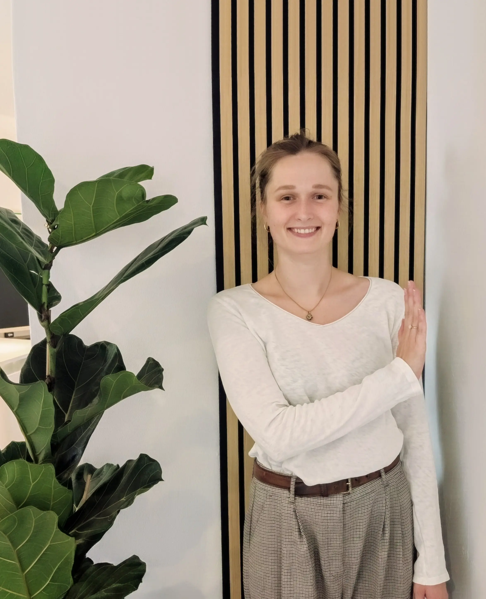
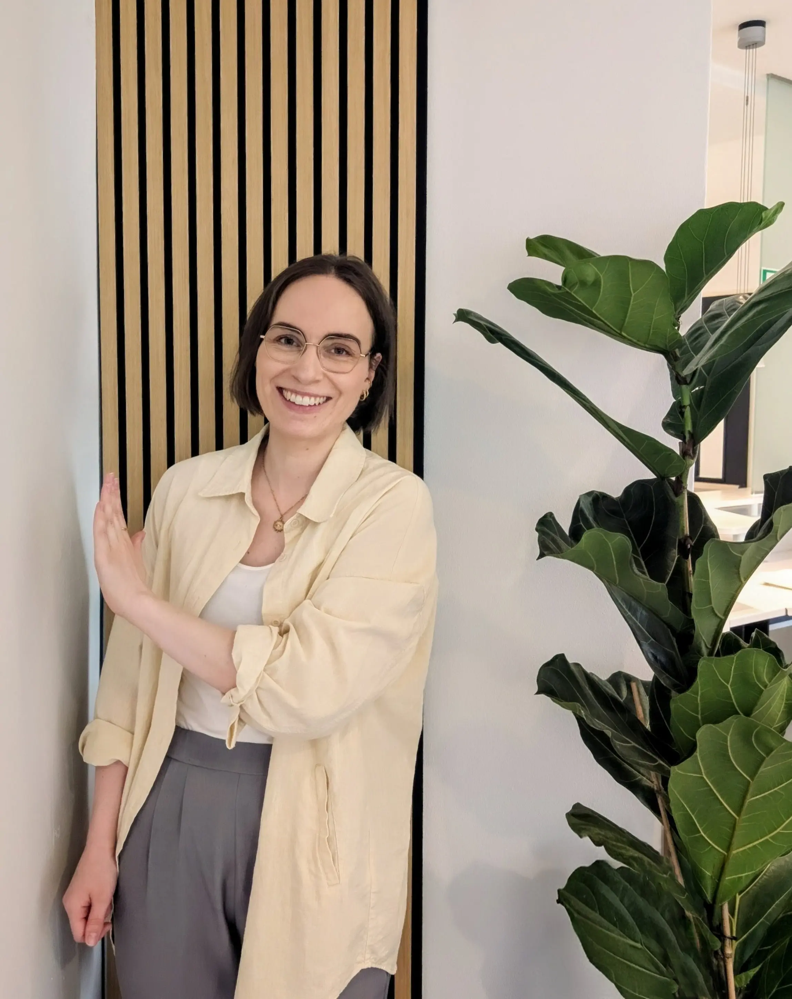

Ergotherapie und Neurofeedback in Düsseldorf.
Individuelle Therapie für mehr Selbstständigkeit, Klarheit und Lebensqualität – basierend auf staatlich anerkannter Ergotherapie und zertifizierter Neurofeedbacktherapie.
Tun & Sein
Der Name unserer Praxis steht für das, woran wir glauben: Gesundheit entsteht aus dem Zusammenspiel von Aktivität und Balance, von Entwicklung und Akzeptanz, von Veränderung und bewusstem Innehalten.
Ins Handeln kommen
Neue Fähigkeiten entwickeln, Herausforderungen bewältigen, persönliche Ziele erreichen. Tun steht für Wachstum, Selbstwirksamkeit und die aktive Gestaltung des eigenen Lebens.
Sich selbst wahrnehmen
Die eigenen Bedürfnisse ernst nehmen, Raum für Regeneration und innere Balance schaffen. Sein erinnert daran, dass Gesundheit nicht nur durch Leistung entsteht, sondern auch durch Selbstfürsorge.
Bei uns steht nicht die Diagnose im Mittelpunkt, sondern der Mensch mit seiner persönlichen Geschichte, seinen Stärken und seinen Zielen.

Unsere Leistungen
Zwei Schwerpunkte, jeweils individuell auf Sie zugeschnitten.
Ergotherapie
5 Fachbereiche, ein ganzheitlicher Ansatz
Von Neurologie über Orthopädie bis Psychiatrie – individuelle Therapie für mehr Selbstständigkeit im Alltag.
Alle Bereiche ansehen →Neurofeedback
Gehirntraining mit moderner Technologie
Die Aktivität des Gehirns wird gemessen und in Echtzeit rückgemeldet – so lernt das Gehirn, seine Aktivität selbstständig zu regulieren.
Mehr erfahren →Unterschiedliche Stärken – ein gemeinsames Ziel
Jede von uns bringt eigene Schwerpunkte mit – genau diese Vielfalt macht unsere Arbeit für Sie wertvoll.

Annika Denecke
Psychiatrie · Neurofeedback · Hirnleistungstraining

Lisa Werneke
Psychiatrie · Neurofeedback · Neurologie/ Orthopädie/ Handtherapie
Vergütung & Rezept
Wir behandeln Kassenpatientinnen und -patienten, Privatpatientinnen und -patienten sowie Selbstzahlende nach ärztlicher Verordnung.
Gesetzlich versichert
Die Behandlung wird über ein kassenärztliches Rezept abgerechnet. Für nicht von der Zuzahlung befreite Erwachsene fällt der gesetzlich geregelte Eigenanteil von 10 % der Behandlungskosten zzgl. 10 € je Verordnung an. Ab 2027 steigt dieser Anteil gesetzlich auf 15 % zzgl. 15 € je Verordnung.
Privat versichert
Vor Behandlungsbeginn schließen wir eine Honorarvereinbarung ab. Die Abrechnung erfolgt auf Grundlage der Gebührenordnung für Therapeuten (GebüTh); bitte klären Sie die Erstattungsmodalitäten vorab mit Ihrer Kasse.
Selbstzahler
Sie möchten ohne Verordnung unsere Leistungen in Anspruch nehmen? Sprechen Sie uns gerne an – wir besprechen gemeinsam die passende Vorgehensweise und die Kosten.
Worauf bei der Verordnung zu achten ist
Damit Ihre Verordnung reibungslos angenommen werden kann, sollte Ihr Arzt bzw. Ihre Ärztin auf folgende Punkte achten:
- Verordnungsform: Ergotherapie
- ICD-10-Code zwingend erforderlich
- Passende Diagnosegruppe laut Heilmittelkatalog
- Leitsymptomatik angekreuzt bzw. individuell ergänzt
- Heilmittel inkl. Menge und Einheiten eingetragen
- Hausbesuch: „Nein" (sofern nicht im häuslichen Umfeld möglich)
- Therapiefrequenz idealerweise als Spanne (z. B. 1–3× pro Woche)
- Dringlicher Behandlungsbedarf nur bei tatsächlichen Notfällen
Individuelle Therapie beginnt mit einem Gespräch
Mo – Do: 8 - 13 Uhr, 14 - 18 Uhr
Fr: 8 - 14 Uhr